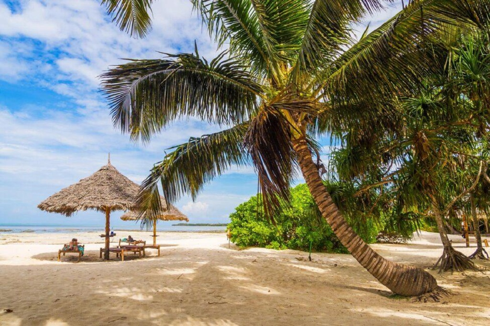

Jambiani Beach

There’s nothing quite like the storied island of Zanzibar. Most visitors will begin their journey in Stone Town, Zanzibar’s Arabic-influenced port city, wandering through alleys in search of fresh seafood and vibrant local culture before hitting the beach. Though plenty of tourists flock to the island’s northern Nungwi beach, those in the know head to Jambiani—located approximately an hour from the center of Stone Town. Turquoise blue waters, traditional dhow boat rides, plenty of snorkeling opportunities, and a range of accommodation options make this beach one of the best on the Swahili coast.
Pongue Beach
Located on the Eastern side of Zanzibar, Pongwe’s bright blue water and endless stretches of sand are absolutely unbeatable. Like Jambiani, Pongwe is located approximately an hour away from Stone Town. This tropical paradise is a bit off the beaten path, with a few all-inclusive resorts claiming large swaths of the coastline. This is the place to come for silence, relaxation, and a little bit of luxury.
Diani Beach

Diani Beach, located on Kenya’s Swahili Coast just a few miles from Mombasa, boasts over twelve miles of pristine sand beaches framed by picturesque palm trees. Known for lux hotels, plentiful skydiving, big game fishing, and a whole lot of parties, Diani Beach is currently one of Kenya’s hottest destinations. Due to its windy season, Diani is also home to some of the continent’s best kite surfing. Make sure to look up the weather before you book your ticket, and possibly plan some time to take advantage of a few kite surfing lessons.